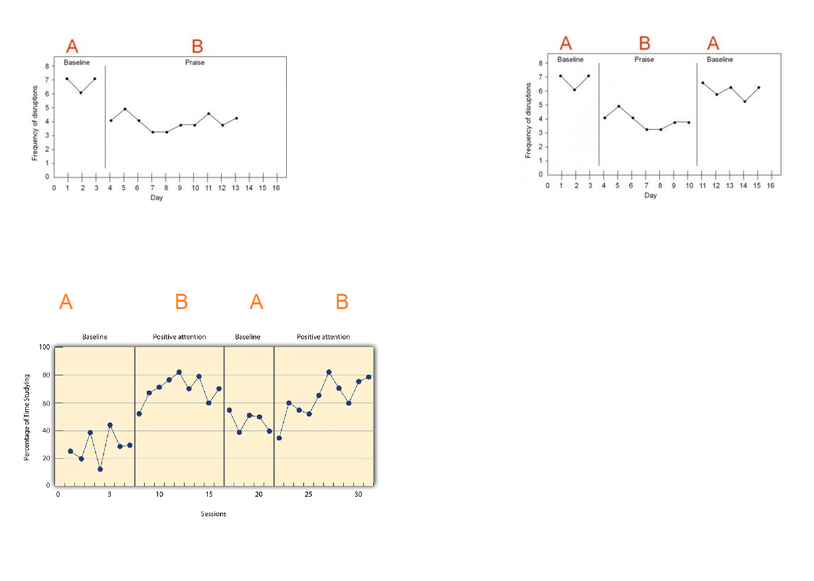
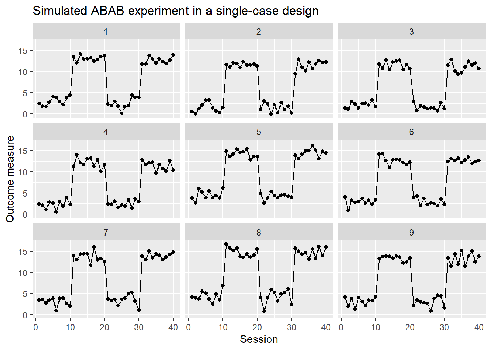

28 Single case experimental desing (sced)
Single-case experimental designs are a family of experimental designs that are characterized by researcher manipulation of an independent variable and repeated measurement of a dependent variable before (i.e., baseline) and after (i.e., intervention phase) introducing the independent variable. In single-case experimental designs a case is the unit of intervention and analysis (e.g., a child, a school). Because measurement within each case is conducted before and after manipulation of the independent variable, the case typically serves as its own control. Experimental variants of single-case designs provide a basis for determining a causal relation by replication of the intervention through (a) introducing and withdrawing the independent variable, (b) manipulating the independent variable across different phases, and (c) introducing the independent variable in a staggered fashion across different points in time. Due to their economy of resources, single-case designs may be useful during development activities and allow for rapid replication across studies. Taken from this document.
Below we present some types of sced.

Ejemplo: simulación de un sced ABAB
Crear una función para simular datos de un sced ABAB que tenga la estructura mostrada abajo y luego estime los parámetros del modelo.
\[\begin{align*} y_{ij} | b_0 &\sim N(\mu_{ij}, \sigma^2_y) \\ \mu_{ij} &= \beta_0 + \beta_1 session_{ij} + \beta_2 expB_{ij} + \beta_3 phase2_{ij} + \beta_4 \, expB_{ij} \, phase2_{ij} + b_{0i} \\ \sigma^2_y &= 1 \\ b_{0} &\sim N(0, \sigma^2_{b0}=1) \end{align*}\]
Para que el experimento tenga un efecto significativo vamos a usar un valor grande \(\beta_2=10\), los valores de los otros coeficientes deben ser los siguientes: \(\beta_0=2\), \(\beta_1=0\), \(\beta_3=0\) y \(\beta_4=0\). Estos últimos tres valores en cero significan que las variables experimento, phase y la interacción (experimento y phase) NO serán significativas.
Simule datos para 9 sujetos cada uno con 10 observaciones en cada una de las cuatro fases ABAB.
Para simular datos del modelo ABAB con la estructura exigida podemos usar esta función.
gen_dat <- function(n_subject=9, ni=10,
beta0=1, beta1=3, beta2=-3,
beta3= -2, beta4=4,
sd_y=1, sd_b0=1) {
nobs <- n_subject * ni * 4
subject <- factor(rep(x=1:n_subject, each=ni * 4))
session <- rep(x=1:(ni*4), times=n_subject)
experiment <- rep(c("A", "B"), each=ni, times=n_subject)
phase <- rep(1:2, each=ni*2, times=n_subject)
phase <- as.factor(phase)
b0 <- rnorm(n=n_subject, mean=0, sd=sd_b0) # Intercepto aleatorio
b0 <- rep(x=b0, each=ni * 4) # El mismo intercepto aleatorio pero repetido
# Creando variables indicadoras para exp = B y phase = 2
experiment_B <- experiment == "B"
phase_2 <- phase == 2
media <- beta0 + beta1 * session + beta2 * experiment_B +
beta3 * phase_2 + beta4 * experiment_B * phase_2 + b0
y <- rnorm(n=nobs, mean=media, sd=sd_y)
datos <- data.frame(subject, session, experiment, phase, y)
return(datos)
}Vamos a simular los datos.
set.seed(123456)
datos <- gen_dat(n_subject = 9, ni=10,
beta0=2, beta1=0, beta2=10,
beta3=0, beta4=0,
sd_y=1, sd_b0=1)Exploremos los datos simulados.
Vamos a dibujar la evoluación de la variable respuesta \(Y\) para ver si se refleja el efecto del experimento.
library(ggplot2)
ggplot(datos, aes(x = session, y = y)) +
geom_point() +
geom_line() +
facet_wrap(~subject) +
labs(x = "Session", y = "Outcome measure", color = "Phase") +
ggtitle("Simulated ABAB experiment in a single-case design")
De la figura anterior se ve claramente que cuando el experimento es B, la variable \(Y\) está en un mayor nivel, cuando el experimento es A, los valores de \(Y\) disminuyen, esto sucede con todos los sujetos.
Ahora vamos a estimar los parámetros del modelo con lmee para ver si coinciden con los valores usados en la generación de los datos.
library(lme4)
mod1 <- lmer(y ~ session + experiment * phase + (1|subject),
data = datos)
summary(mod1)## Linear mixed model fit by REML ['lmerMod']
## Formula: y ~ session + experiment * phase + (1 | subject)
## Data: datos
##
## REML criterion at convergence: 1071.2
##
## Scaled residuals:
## Min 1Q Median 3Q Max
## -3.6081 -0.6842 0.0281 0.7274 2.2774
##
## Random effects:
## Groups Name Variance Std.Dev.
## subject (Intercept) 1.192 1.092
## Residual 1.020 1.010
## Number of obs: 360, groups: subject, 9
##
## Fixed effects:
## Estimate Std. Error t value
## (Intercept) 2.92466 0.39265 7.449
## session 0.00929 0.01853 0.501
## experimentB 9.95197 0.23872 41.690
## phase2 -0.30608 0.39996 -0.765
## experimentB:phase2 -0.04177 0.21287 -0.196
##
## Correlation of Fixed Effects:
## (Intr) sessin exprmB phase2
## session -0.260
## experimentB 0.081 -0.776
## phase2 0.168 -0.926 0.838
## exprmntB:p2 0.136 0.000 -0.446 -0.266Vamos a repetir el ejercicio pero usando el paquete gamlss.
library(gamlss)
mod2 <- gamlss(y ~ session + experiment * phase + re(random=~1|subject), data=datos)## GAMLSS-RS iteration 1: Global Deviance = 1015.582
## GAMLSS-RS iteration 2: Global Deviance = 1015.582## ******************************************************************
## Family: c("NO", "Normal")
##
## Call: gamlss(formula = y ~ session + experiment * phase +
## re(random = ~1 | subject), data = datos)
##
## Fitting method: RS()
##
## ------------------------------------------------------------------
## Mu link function: identity
## Mu Coefficients:
## Estimate Std. Error t value Pr(>|t|)
## (Intercept) 2.92466 0.14471 20.210 <2e-16 ***
## session 0.00929 0.01820 0.511 0.610
## experimentB 9.95197 0.23444 42.451 <2e-16 ***
## phase2 -0.30608 0.39279 -0.779 0.436
## experimentB:phase2 -0.04177 0.20905 -0.200 0.842
## ---
## Signif. codes: 0 '***' 0.001 '**' 0.01 '*' 0.05 '.' 0.1 ' ' 1
##
## ------------------------------------------------------------------
## Sigma link function: log
## Sigma Coefficients:
## Estimate Std. Error t value Pr(>|t|)
## (Intercept) -0.008407 0.037268 -0.226 0.822
##
## ------------------------------------------------------------------
## NOTE: Additive smoothing terms exist in the formulas:
## i) Std. Error for smoothers are for the linear effect only.
## ii) Std. Error for the linear terms maybe are not accurate.
## ------------------------------------------------------------------
## No. of observations in the fit: 360
## Degrees of Freedom for the fit: 13.79041
## Residual Deg. of Freedom: 346.2096
## at cycle: 2
##
## Global Deviance: 1015.582
## AIC: 1043.163
## SBC: 1096.754
## ******************************************************************A continuación el código para obtener las estimaciones de \(\boldsymbol{\Theta}\) con lmer y gamlss.
vc <- VarCorr(mod1)
vc <- as.data.frame(vc)
theta_lmer <- c(fixef(mod1), vc$sdcor[2:1])
theta_gamlss <- c(coef(mod2)[c(1, 2, 3, 4, 6)],
exp(coef(mod2, what='sigma')),
as.numeric(VarCorr(getSmo(mod2))[1, 2]))
theta_true <- c(beta0=2, beta1=0, beta2=10, beta3=0, beta4=0,
sigma_y=1, sigma_b0=1)
cbind(theta_true, theta_lmer, theta_gamlss)## theta_true theta_lmer theta_gamlss
## beta0 2 2.924658593 2.924658593
## beta1 0 0.009290065 0.009290065
## beta2 10 9.951970482 9.951970482
## beta3 0 -0.306076601 -0.306076601
## beta4 0 -0.041773169 -0.041773169
## sigma_y 1 1.009730881 0.991627844
## sigma_b0 1 1.091856686 1.028181000De la tabla anterior podemos ver que ambos enfoques lograron estimar bastante bien el vector de parámetros \(\boldsymbol{\Theta}\). Para comparar vamos a calcular el Mean Squared Error.
## [1] 0.1373353## [1] 0.1362398De los resultados vemos que el MSE de gamlss es ligeramente menor.